HOME
POSICIONAMENTOS
SOBRE
LIVRO VIRTUAL
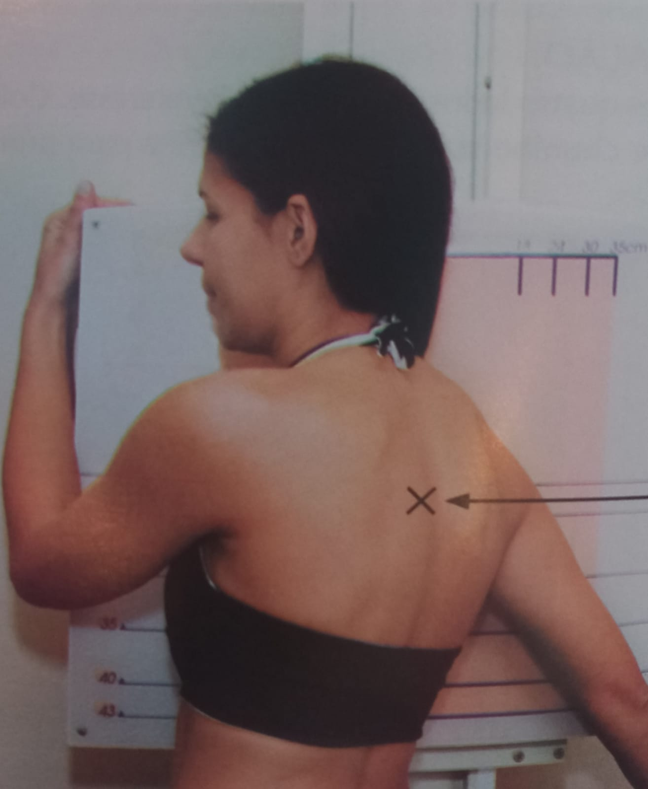
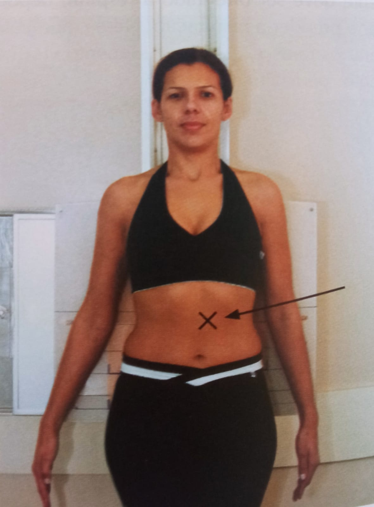
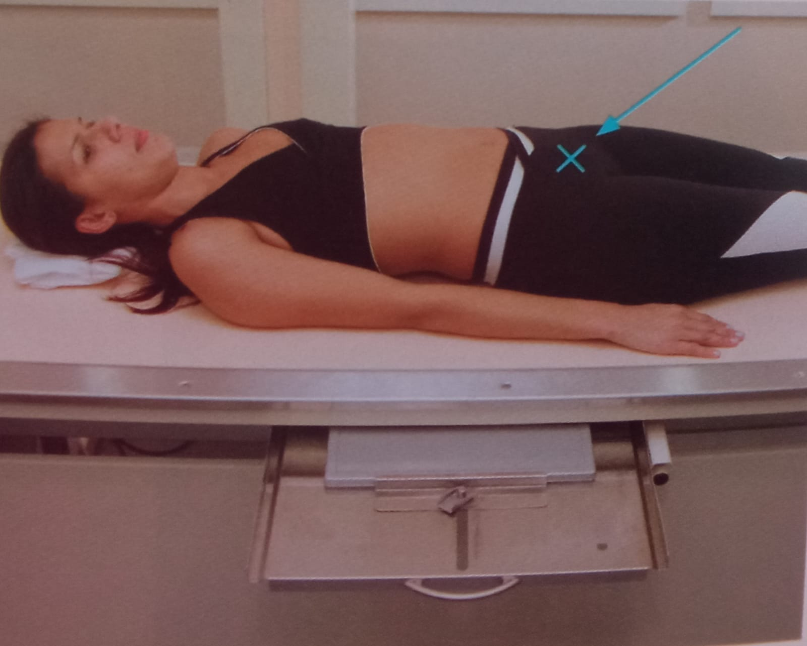
Esterno Oblíqua: O.A.D
Ortostática AP
Mão Frente
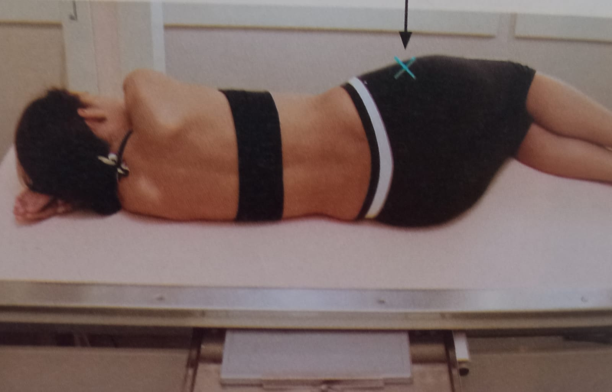
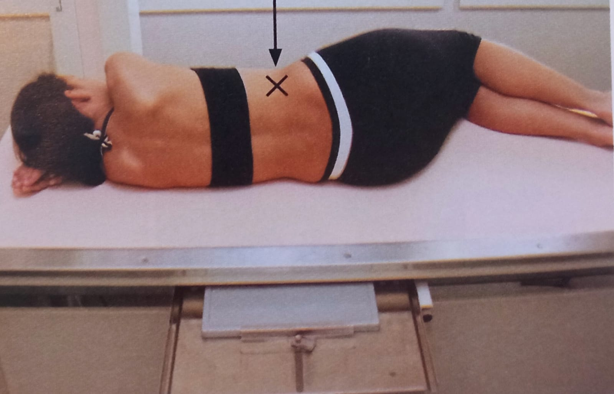
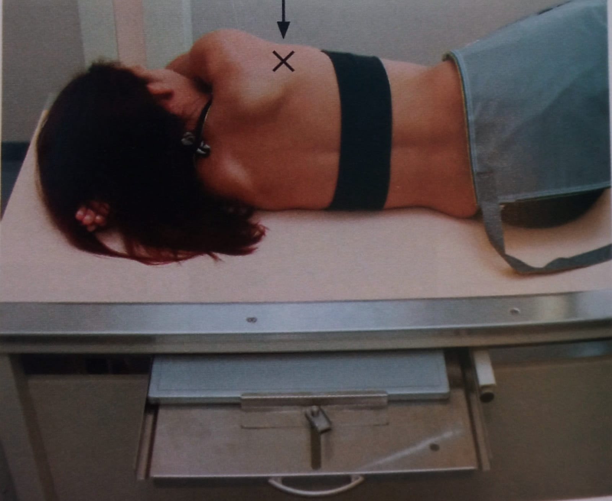
Coluna torácica AP
Coluna cervical Lateral
Coluna cervical AP axial
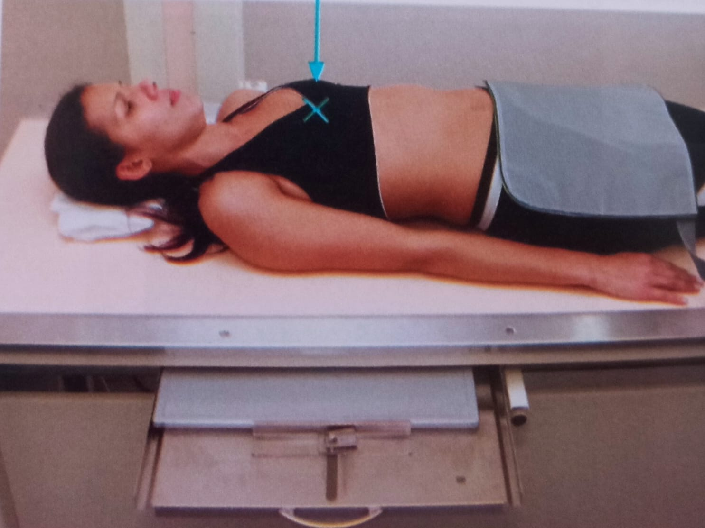
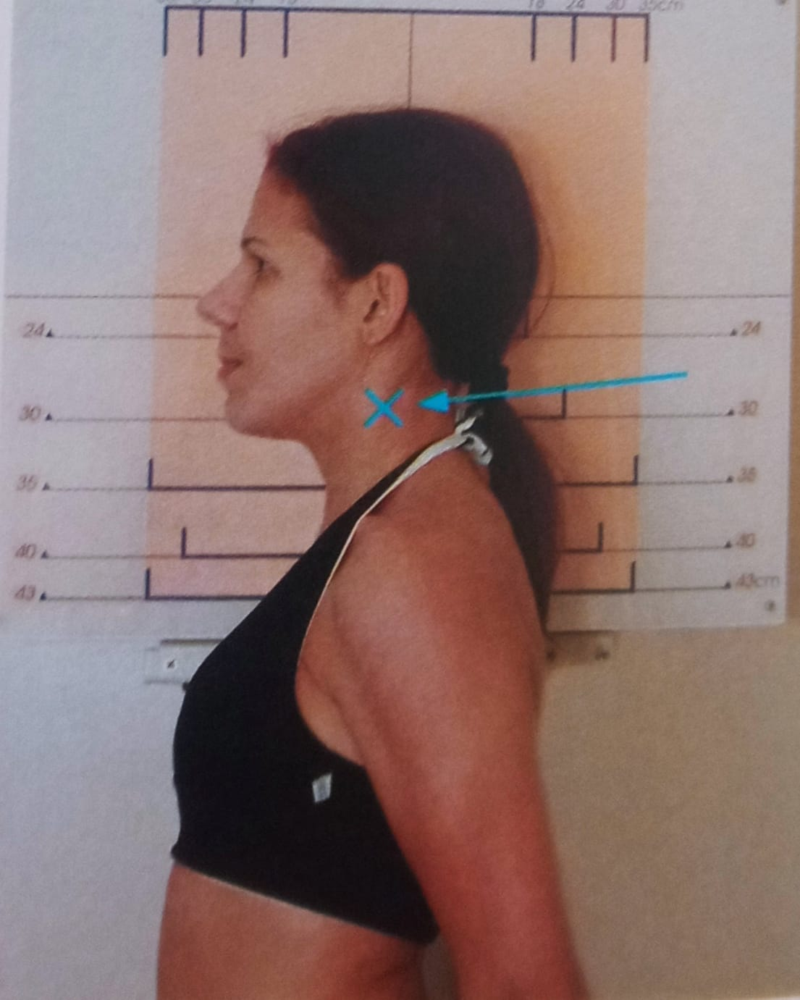
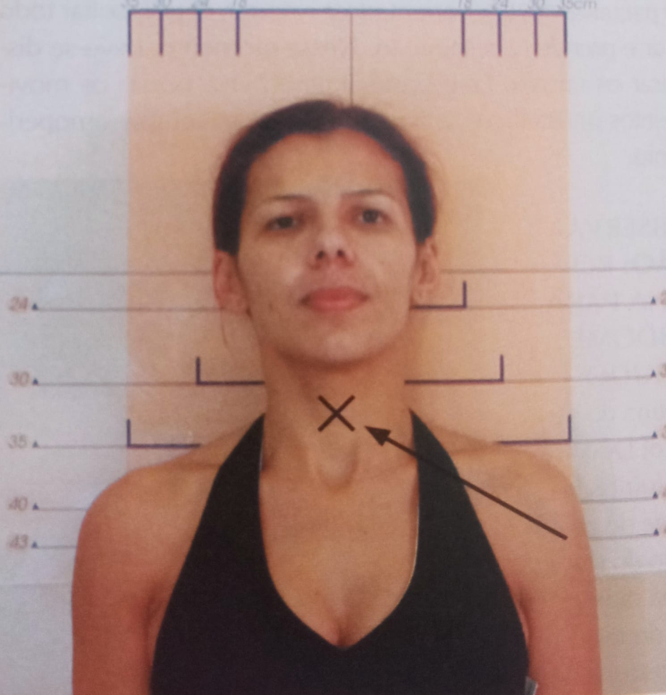
Polegar Perfil
Mão Oblíqua
Mão Frente
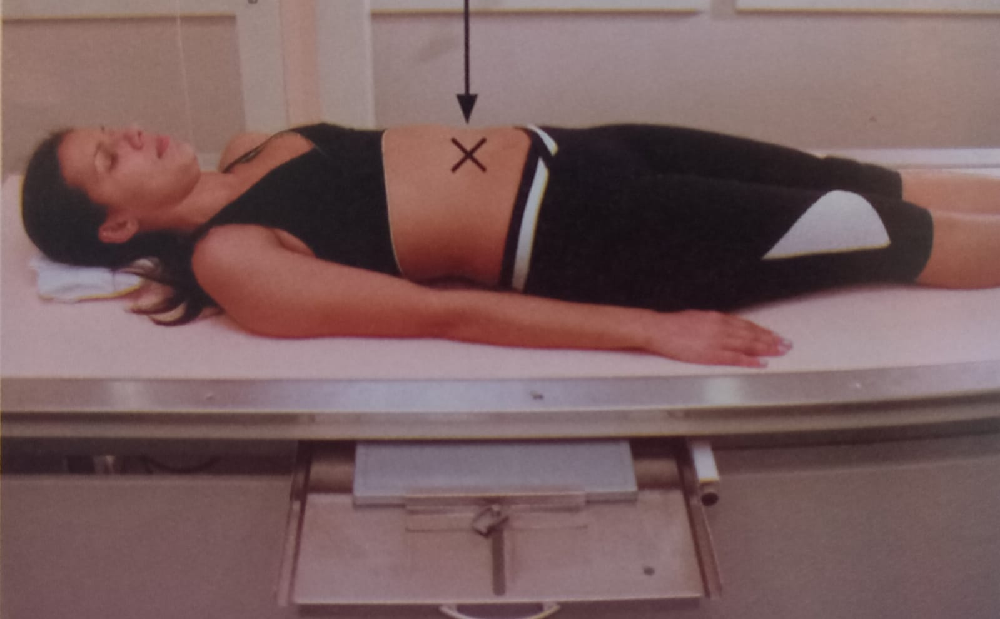
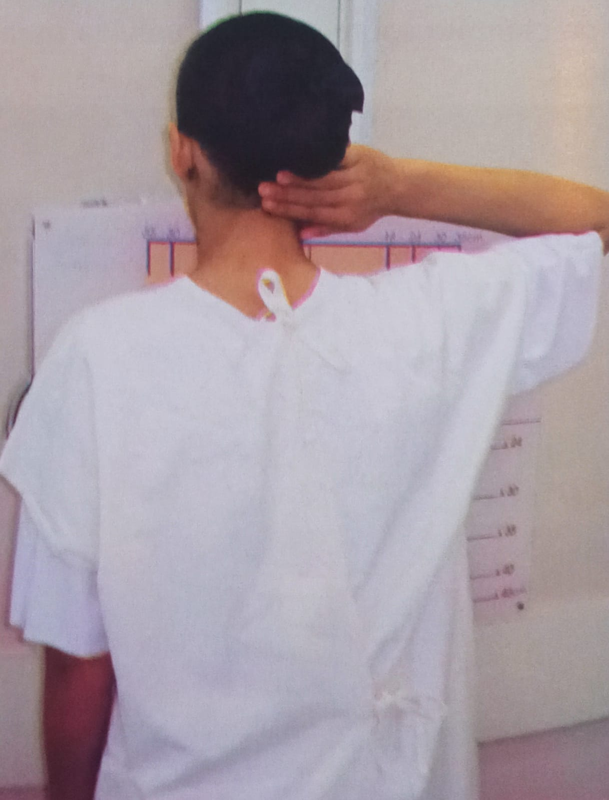
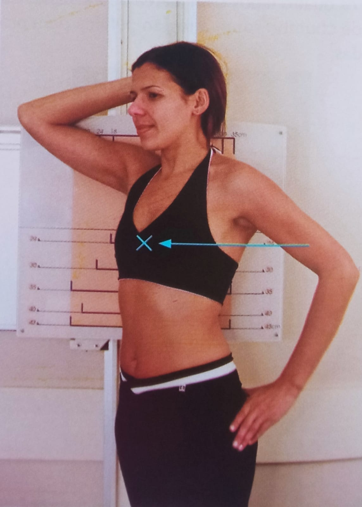
Abdome Agudo AP em decúbito dorsal
Costelas anteriores PA
Costelas Oblíquas posteriores AP
* TODAS AS INFORMAÇÕES DESSE SITE FORAM RETIRADAS DO "MANUAL DE POSICIONAMENTOS RADIOLÓGICOS", AUTORES FRANCISCO FEITOSA E RENATO FERNANDES.
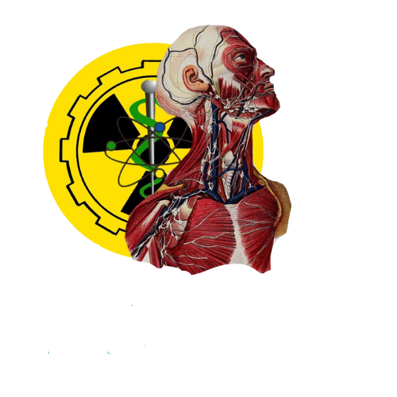